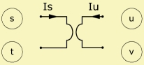

Gyrator
| Home | LE-Part | General |
Parameters
 |
| Caption | String | Name of component |
| Formula | String | Formula of parameters |
| BL | N/A | Factor |
The Gyrator is a four-pole lumped component, which converts flows and potentials.

with I1 and I2 flow into the first and second port (Is, Iu), and with V1 and V2 potential differences across first and second ports (V1 = Vt - Vs and V2 = Vv - VV).
BL can be regarded as a simple conversion factor, or as force-factor of the electro-dynamic transducer.
Formula
The name of the parameters are equal to the formula-identifiers:
| Parameter | |
| BL | Factor |